Μάθημα 18: Αντίγραφα ασφαλείας και συναλλαγές¶
Βάση δεδομένων και Python: αντίγραφο ασφαλείας και επαναφορά (Export, Import, mariadb-dump), αντίγραφο από την Python (subprocess), συναλλαγές (START TRANSACTION, COMMIT, ROLLBACK) και συναλλαγές από την Python
Διάρκεια: 2 κύκλοι × περίπου 45′ εργασία (2 διδακτικές ώρες)
Φύλλο εργασίας
Αυτή η σελίδα εξηγεί τις έννοιες. Οι ασκήσεις και οι οδηγίες για κάθε κύκλο βρίσκονται στο Φύλλο εργασίας 18. Δούλεψε με τις δύο σελίδες ανοιχτές.
Αρχεία εργαστηρίου¶
| Αρχείο | Κύκλος | Τι είναι |
|---|---|---|
| 01-start-state.sql | πριν αρχίσεις | η βάση όπως τελειώνει το Μάθημα 17 |
| config.py | 1 | αλλάζει: έχει δύο νέες γραμμές στο τέλος, χωρίς κενά |
| db.py, ui.py, config_local.example.py | 1 | ίδια με το Μάθημα 17 (δεν έχουν κενά) |
| backup.py | 1 | νέο, με κενά |
| check_backup.py | 1 | νέο, έτοιμος έλεγχος |
| 02-loans.sql | 2 | νέο, έτοιμο |
| 03-transactions.sql | 2 | νέο, με κενά |
| lab_data.py, lab_transactions.py | 2 | νέα, έτοιμα |
| loans.py | 2 | νέο, με κενά |
| lending.py, check_loans.py | 2 | νέα, έτοιμα |
| lab_isolation.py | 2 | νέο, έτοιμο (για την «Δική σου εκδοχή») |
Η αποστολή¶
Η βάση σου δουλεύει. Δύο πράγματα όμως μπορούν να τη χαλάσουν χωρίς καμία επίθεση:
- Ένα ατύχημα. Ένα
DELETEχωρίςWHERE(το είδες στο Μάθημα 6), έναDROP TABLEστον λάθος πίνακα, ένας δίσκος που χαλά. Χρειάζεσαι αντίγραφο ασφαλείας, και πρέπει να ξέρεις να επαναφέρεις από αυτό. - Μια δουλειά που σταματά στη μέση. Αν μια αλλαγή θέλει δύο εντολές και το πρόγραμμα σταματήσει ανάμεσά τους, η βάση μένει με μισή δουλειά. Χρειάζεσαι συναλλαγές: ή γίνονται όλες οι εντολές ή καμία.
Το πρώτο σε σώζει όταν χαθούν δεδομένα. Το δεύτερο εμποδίζει να χαλάσουν.
Στο τέλος θα μπορείς¶
- να εξηγείς τι περιέχει ένα αντίγραφο ασφαλείας (και τι δεν περιέχει) και γιατί το αρχείο του πρέπει να φυλάσσεται σαν μυστικό.
- να παίρνεις αντίγραφο με το phpMyAdmin (
Export) και με τοmariadb-dump, και να επαναφέρεις μεImportκαι μεmariadb … -e "source …". - να ελέγχεις ένα αντίγραφο δοκιμάζοντας την επαναφορά, και να εξηγείς γιατί αυτό είναι απαραίτητο.
- να φτιάχνεις αντίγραφο από την Python με
subprocess.run, με όνομα που έχει ημερομηνία και ώρα. - να γράφεις συναλλαγές με
START TRANSACTION,COMMITκαιROLLBACK, και να εξηγείς τι είναι το «αυτόματο COMMIT» (autocommit). - να γράφεις στην Python μια αλλαγή με δύο βήματα (
commit,rollback,raise) και να εξηγείς γιατί δεν πρέπει να «καταπίνεις» ένα σφάλμα χωρίςrollback.
Πριν αρχίσεις¶
- Ξεκίνα τη MySQL και τον Apache από το XAMPP Control Panel.
- Φτιάξε έναν φάκελο
18-backup-transactionsμέσα στον φάκελο των μαθημάτων και κατέβασε εκεί τα δεκαπέντε αρχεία του πίνακα. Κράτησε ακριβώς τα ονόματα. Όλα τα.pyστον ίδιο φάκελο, όπως στα Μαθήματα 15–17. (Αν έχεις ακόμη τον φάκελο του Μαθήματος 17, αντίγραψέ τον και κατέβασε μόνο τα νέα και το αλλαγμένοconfig.py.) Μέσα στον φάκελο φτιάξε έναν υποφάκελοbackups: εκεί θα μπουν τα αντίγραφα. - Αντίγραψε το
config_local.example.pyωςconfig_local.py(όπως στο Μάθημα 17). Οι λογαριασμοίgame_appκαιgame_readerπρέπει να υπάρχουν· αν όχι, τρέξε το02-users.sqlτου Μαθήματος 17. - Άνοιξε τον φάκελο στο VS Code και άνοιξε τερματικό.
- Φέρε τη βάση στην κατάσταση εκκίνησης: στο phpMyAdmin επίλεξε τη βάση
game_library, άνοιξε την καρτέλα Import, διάλεξε το01-start-state.sqlκαι πάτα Import. - Έλεγξε στην καρτέλα Browse ότι ο
gamesέχει 30 γραμμές, οgenres11, οreviews12, οplatforms5, οgame_platforms63 και οmembers4.
Η επαναφορά σβήνει ό,τι έγινε μετά το αντίγραφο
Σήμερα θα χαλάσεις τη βάση επίτηδες και θα την επαναφέρεις. Κάθε επαναφορά γυρίζει τη βάση στην ώρα του αντιγράφου: ό,τι αλλαγές έκανες μετά χάνονται. Το 01-start-state.sql είναι το σωσίβιό σου όλη την ώρα.
Ο κύκλος εργασίας
Πρόβλεψη → εκτέλεση → σύγκριση → εξήγηση. Σήμερα πρόβλεψε τι θα έχει η βάση μετά την επαναφορά (τα δεδομένα και οι κανόνες της) και τι θα μείνει στη βάση όταν μια συναλλαγή σταματήσει στη μέση.
Κύκλος 1 — Αντίγραφα ασφαλείας¶
Σε αυτόν τον κύκλο παίρνεις αντίγραφο με τρεις τρόπους, επαναφέρεις από αυτά, και βρίσκεις ένα σφάλμα που κανείς δεν σου λέει.
1.1 Γιατί αντίγραφα¶
Τα δεδομένα χάνονται συνήθως από ατύχημα, όχι από επίθεση:
- ένα
DELETE FROM reviews;χωρίςWHERE(Μάθημα 6)· - ένα
DROP TABLEστον λάθος πίνακα ή στη λάθος βάση· - ένα πρόγραμμα με λάθος, που γράφει λάθος τιμές σε όλες τις γραμμές·
- ένας δίσκος που χαλά, ένας υπολογιστής που χάνεται ή κλέβεται.
Ένα αντίγραφο στον ίδιο δίσκο με τη βάση σε σώζει από τα τρία πρώτα, όχι από το τελευταίο. Ο κανόνας 3-2-1 το λέει συνοπτικά: 3 αντίγραφα των δεδομένων, σε 2 διαφορετικά μέσα (π.χ. δίσκος και USB), με 1 σε άλλο μέρος (π.χ. στο σπίτι).
1.2 Τι είναι ένα αντίγραφο¶
Ένα αντίγραφο ασφαλείας μιας βάσης είναι ένα απλό αρχείο κειμένου .sql με εντολές CREATE TABLE και INSERT. Ξέρεις ήδη να το διαβάζεις και να το τρέχεις: όλα τα «σωσίβια» του μαθήματος (01-start-state.sql κ.λπ.) ήταν αντίγραφα ασφαλείας. Δες ένα κομμάτι από το αντίγραφο της game_library:
DROP TABLE IF EXISTS `platforms`;
CREATE TABLE `platforms` (
`id` int(11) NOT NULL AUTO_INCREMENT,
`name` varchar(50) NOT NULL,
`maker` varchar(30) NOT NULL,
`release_year` int(11) NOT NULL,
PRIMARY KEY (`id`),
UNIQUE KEY `name` (`name`),
CONSTRAINT `chk_platform_year` CHECK (`release_year` between 1970 and 2100)
) ENGINE=InnoDB AUTO_INCREMENT=6 DEFAULT CHARSET=utf8mb4 COLLATE=utf8mb4_general_ci;
INSERT INTO `platforms` VALUES
(1,'PlayStation 5','Sony',2020),
(2,'Xbox Series X','Microsoft',2020),
(3,'Nintendo Switch','Nintendo',2017),
(4,'Steam Deck','Valve',2022),
(5,'Meta Quest','Meta',2020);
Τρία πράγματα να προσέξεις:
- Πριν από κάθε
CREATE TABLEυπάρχειDROP TABLE IF EXISTS: η επαναφορά σβήνει τον πίνακα που υπάρχει και τον ξαναφτιάχνει. Γι' αυτό γυρίζει τη βάση πίσω στο παρελθόν. - Το
CONSTRAINT … CHECKείναι μέρος της δομής του πίνακα. Αν λείπει από το αντίγραφο, η βάση που θα επαναφερθεί δεν θα ελέγχει τις τιμές (Μάθημα 8). Θα το δεις σήμερα να συμβαίνει. - Το αντίγραφο έχει όλα τα δεδομένα. Άρα και τον πίνακα
membersμε τα hash των κωδικών (Μάθημα 17).
| Μέσα στο αντίγραφο | Έξω από το αντίγραφο |
|---|---|
| οι πίνακες, οι στήλες, τα κλειδιά, οι περιορισμοί | οι λογαριασμοί (game_app, game_reader) και τα δικαιώματά τους: ανήκουν στον εξυπηρετητή |
| όλα τα δεδομένα, και τα hash των κωδικών | το config_local.py με τους κωδικούς σύνδεσης |
Το αρχείο του αντιγράφου είναι μυστικό
Το αντίγραφο περιέχει ό,τι περιέχει η βάση, και μπορεί να το διαβάσει όποιος το βρει, χωρίς κωδικό και χωρίς λογαριασμό. Μην το ανεβάζεις στο git και μην το στέλνεις σε κανέναν. Το .gitignore του μαθήματος αγνοεί τον φάκελο backups. Σε πραγματικό σύστημα τα αντίγραφα κρυπτογραφούνται και φυλάσσονται με δικαιώματα πρόσβασης.
1.3 Επαναφορά, και γιατί πρέπει να τη δοκιμάσεις¶
Επαναφορά (restore) είναι να τρέξεις το αρχείο του αντιγράφου: οι πίνακες ξαναφτιάχνονται και γεμίζουν. Η βάση γυρίζει στην κατάσταση της ώρας που πήρες το αντίγραφο.
Ένα αντίγραφο που δεν έχεις δοκιμάσει να επαναφέρεις δεν είναι αντίγραφο: είναι ένα αρχείο που ελπίζεις ότι δουλεύει. Θα το δεις σήμερα στην πράξη: ένα αντίγραφο που φαίνεται σωστό μπορεί να έχει χάσει κάτι σημαντικό.
Στάδιο 1 — Το αντίγραφο από το phpMyAdmin¶
Α. Πριν το αντίγραφο: δύο έλεγχοι. Στην καρτέλα SQL της βάσης game_library τρέξε:
SELECT COUNT(*) AS checks_n
FROM information_schema.CHECK_CONSTRAINTS
WHERE CONSTRAINT_SCHEMA = 'game_library';
Η information_schema είναι μια βάση που έχει ο ίδιος ο εξυπηρετητής και περιγράφει όλες τις άλλες. Η εντολή μετρά τους περιορισμούς CHECK που έχεις φτιάξει στα Μαθήματα 8–11 (chk_price, chk_year, chk_added, chk_platform_year, chk_stars): το αποτέλεσμα είναι 5. Μετά δοκίμασε μια τιμή που δεν επιτρέπεται:
Η βάση το απορρίπτει με #4025 - CONSTRAINT chk_price failed (Μάθημα 8).
Β. Το αντίγραφο. Επίλεξε τη βάση game_library, άνοιξε την καρτέλα Export και διάλεξε Export method: Custom. Κατέβα μέχρι τα Object creation options και άναψε τον διακόπτη Add DROP TABLE / VIEW / PROCEDURE / FUNCTION / EVENT / TRIGGER statement. Πάτα Export (στο τέλος της σελίδας).
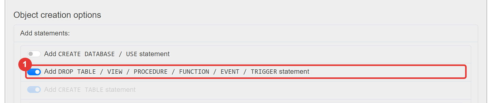
Ο Quick τρόπος (ο προεπιλεγμένος) δεν βάζει DROP TABLE. Με τέτοιο αρχείο η επαναφορά πάνω σε βάση που έχει ήδη τους πίνακες δίνει #1050 - Table 'games' already exists.
Ο φυλλομετρητής κατεβάζει το αρχείο game_library.sql. Μετακίνησέ το στον φάκελο backups και μετονόμασέ το pma-game_library.sql.
Γ. Το ατύχημα. Στην καρτέλα SQL τρέξε, μία-μία:
(Το phpMyAdmin ζητά επιβεβαίωση για το DROP TABLE: πάτα OK.) Στην καρτέλα Browse ο reviews είναι άδειος και ο game_platforms δεν υπάρχει πια.
Δ. Η επαναφορά. Στην καρτέλα Import της βάσης διάλεξε το pma-game_library.sql. Κλείσε τον διακόπτη Enable foreign key checks (στο τμήμα Other options) και πάτα Import.
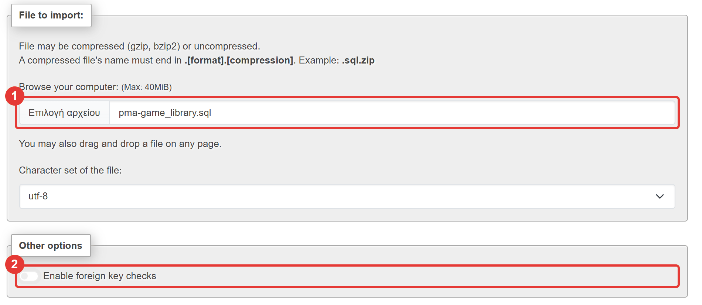
Γιατί κλείνει ο διακόπτης: το αρχείο σβήνει τους πίνακες έναν-έναν (DROP TABLE), και ο games αναφέρεται ακόμη από άλλους πίνακες με ξένο κλειδί (Μάθημα 11). Με τον έλεγχο ανοιχτό, η βάση απαντά #1451 - Cannot delete or update a parent row και η επαναφορά μένει μισή.
Στην καρτέλα Browse ο reviews έχει πάλι 12 γραμμές και ο game_platforms υπάρχει με 63. Όλα γύρισαν.
Ε. Η παγίδα. Ξαναδοκίμασε την ίδια εντολή με την τιμή -5:
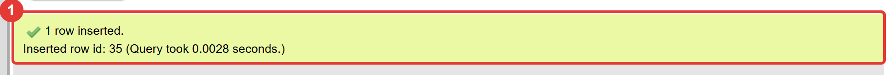
Η βάση δέχτηκε την τιμή -5! Το ίδιο το φανερώνει και το πρώτο ερώτημα του βήματος Α: τώρα δίνει 0 αντί για 5. Το αντίγραφο του phpMyAdmin έφερε πίσω τα δεδομένα, αλλά όχι τους περιορισμούς CHECK. Η βάση που «επαναφέρθηκε» είναι πιο αδύναμη από την αρχική, και κανένα μήνυμα δεν το είπε.
Σε ποια έκδοση το δοκιμάσαμε
Αυτό παρατηρήθηκε στο phpMyAdmin 5.2.3 του XAMPP με MariaDB 10.11. Στη δική σου έκδοση μπορεί να είναι διαφορετικό: δοκίμασε το (έλεγξε με το ερώτημα του βήματος Α). Το συμπέρασμα δεν αλλάζει: μην εμπιστεύεσαι ένα αντίγραφο που δεν έχεις ελέγξει με επαναφορά.
Σβήσε τη δοκιμαστική γραμμή (DELETE FROM games WHERE title = 'Test Game';) και ξαναφέρε τη σωστή βάση με το 01-start-state.sql (Import), για να πάρεις στο επόμενο στάδιο ένα σωστό αντίγραφο.
1.4 Η γραμμή εντολών: mariadb-dump¶
Η MariaDB έχει δικό της πρόγραμμα για αντίγραφα, το mariadb-dump. Στο XAMPP βρίσκεται στον φάκελο C:\xampp\mysql\bin (δίπλα του είναι το mariadb.exe, ο πελάτης της γραμμής εντολών). Στο τερματικό του VS Code (PowerShell) βάζουμε τη διαδρομή σε μια μεταβλητή:
και παίρνουμε το αντίγραφο:
& "$bin\mariadb-dump.exe" --user=root --default-character-set=utf8mb4 --single-transaction --databases game_library --result-file=backups/game_library.sql
(Το & χρειάζεται στο PowerShell όταν η εντολή ξεκινά με διαδρομή σε εισαγωγικά. Στο cmd.exe γράφεις τα ίδια χωρίς το &. Η μεταβλητή $bin ισχύει μόνο σε αυτό το τερματικό. Στα παλιότερα XAMPP το πρόγραμμα λέγεται mysqldump.exe.)
| Επιλογή | Τι κάνει |
|---|---|
--user=root |
με ποιον λογαριασμό συνδέεται (ο root του XAMPP δεν έχει κωδικό) |
--default-character-set=utf8mb4 |
τα ελληνικά περνούν σωστά στο αρχείο |
--single-transaction |
παίρνει συνεπές αντίγραφο μέσα σε μία συναλλαγή, χωρίς να κλειδώνει τους πίνακες (περισσότερα στον Κύκλο 2) |
--databases game_library |
βάζει στο αρχείο και CREATE DATABASE και USE: το αντίγραφο φτιάχνει μόνο του τη βάση, ακόμη και σε κενό εξυπηρετητή |
--result-file=… |
το αρχείο που θα γραφτεί |
Τρεις παγίδες του PowerShell
1. Μη γράψεις … > αρχείο.sql. Το > του PowerShell ξαναγράφει το κείμενο με δική του κωδικοποίηση (στο δοκιμαστικό περιβάλλον πρόσθεσε αόρατους χαρακτήρες στην αρχή του αρχείου): το αρχείο δεν είναι πια το ίδιο. Το --result-file γράφει το αρχείο ακριβώς όπως το φτιάχνει το πρόγραμμα.
2. Στην επαναφορά με το source γράφε τη διαδρομή με κάθετες προς τα εμπρός (backups/game_library.sql). Το \g είναι εντολή του προγράμματος (σημαίνει «εκτέλεσε») και η διαδρομή backups\game_library.sql σπάει στη μέση: #1064 … near 'source backups'.
3. Μην περάσεις το αρχείο με Get-Content αρχείο.sql | mariadb …: τα ελληνικά μπαίνουν στη βάση κατεστραμμένα (τα δοκιμάσαμε: Αγωνιστικό έγινε ΑγωνιστικΟ), και χωρίς κανένα σφάλμα.
Η επαναφορά γίνεται με τον πελάτη mariadb.exe, με λογαριασμό που μπορεί να φτιάχνει πίνακες (ο root):
Ο game_app δεν μπορεί να κάνει επαναφορά: δεν έχει δικαίωμα DROP και CREATE (Μάθημα 17). Η επαναφορά είναι δουλειά του διαχειριστή.
Στάδιο 2 — Το αντίγραφο από το τερματικό¶
- Τρέξε το
01-start-state.sql(Import): η βάση ξαναβρίσκει τους 5 περιορισμούςCHECK. Έλεγξε με το ερώτημα του Σταδίου 1 (πρέπει να δώσει 5). -
Πάρε το αντίγραφο με την εντολή της ενότητας 1.4 (πρέπει να υπάρχει ο φάκελος
backups).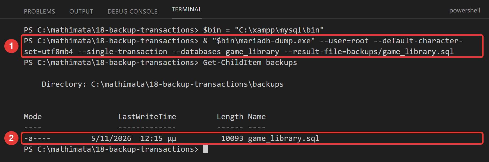
-
Άνοιξε το
backups/game_library.sqlστο VS Code. Με αναζήτηση (Ctrl+F) βρες: πόσαCREATE TABLEέχει (6)· πόσες φορές υπάρχει το κείμενοCHECK ((με κενό και παρένθεση: 5· η λέξηCHECKμόνη της βρίσκεται και σε άλλες γραμμές της κεφαλίδας, π.χ.FOREIGN_KEY_CHECKS)· αν υπάρχειCREATE USERήGRANT(όχι). -
Κάνε το ατύχημα και την επαναφορά, από το τερματικό:
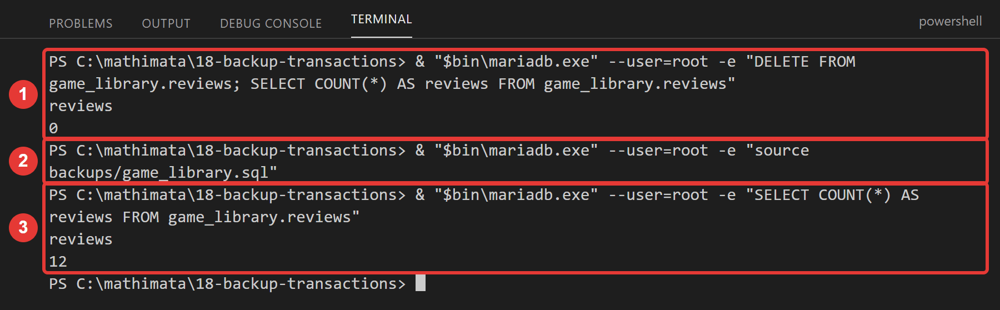
-
Ξαναδοκίμασε το
INSERTμε την τιμή-5και ξανάτρεξε το ερώτημα των περιορισμών. Αυτή τη φορά η βάση απορρίπτει την τιμή (#4025) και το ερώτημα δίνει 5: το αντίγραφο τουmariadb-dumpέφερε και τους κανόνες.
Τι κερδίζεις με το --single-transaction
Αν ο game_reader τρέξει το mariadb-dump χωρίς αυτή την επιλογή, παίρνει Got error: 1044 … when using LOCK TABLES και το αρχείο μένει μισό: χωρίς την επιλογή το πρόγραμμα προσπαθεί να κλειδώσει τους πίνακες, και ο game_reader δεν έχει τέτοιο δικαίωμα. Με την επιλογή δεν κλειδώνει τίποτα: διαβάζει μέσα σε μία συναλλαγή, και ένας λογαριασμός που μόνο διαβάζει αρκεί για αντίγραφα.
1.5 Το αντίγραφο από την Python¶
Ένα αντίγραφο που το παίρνεις όταν θυμηθείς δεν είναι ασφάλεια. Θέλουμε ένα πρόγραμμα που το κάνει με μία εντολή (και, μετά, μπορεί να τρέχει αυτόματα κάθε μέρα). Η Python μπορεί να τρέξει οποιοδήποτε άλλο πρόγραμμα με τη subprocess.run: της δίνεις μια λίστα με το πρόγραμμα και τα ορίσματά του, και περιμένει να τελειώσει.
Το backup.py κάνει ό,τι έκανες με το χέρι. Δες τι είναι καινούργιο:
- Το όνομα έχει ημερομηνία και ώρα (
game_library-2026-11-05_14-30.sql), με τηνstrftimeτου Μαθήματος 9. Δεν βάζουμε:στην ώρα (τα Windows δεν το δέχονται σε όνομα αρχείου). Η σειρά έτος-μήνας-μέρα κάνει τα ονόματα να ταξινομούνται και χρονολογικά. - Ο λογαριασμός είναι ο
game_reader: για αντίγραφο αρκεί λογαριασμός που μόνο διαβάζει (η αρχή των ελάχιστων δικαιωμάτων του Μαθήματος 17). - Ο κωδικός δεν μπαίνει στην εντολή (θα φαινόταν σε όποιον κοιτάξει τη λίστα των προγραμμάτων που τρέχουν). Περνά με μεταβλητή περιβάλλοντος (
MYSQL_PWD), μόνο για αυτό το πρόγραμμα. - Ο έλεγχος: ένα πρόγραμμα που τελειώνει σωστά επιστρέφει 0 (
returncode). Κάθε άλλος αριθμός είναι αποτυχία. Τότε το πρόγραμμά μας σβήνει το μισό αρχείο και σηκώνειRuntimeErrorμε το μήνυμα τουmariadb-dump.
Στάδιο 3 — backup.py¶
Άνοιξε το backup.py και συμπλήρωσε τα πέντε κενά:
"""Στάδιο 3: αντίγραφο ασφαλείας της βάσης από την Python.
Τρέχει το mariadb-dump (το ίδιο πρόγραμμα που έτρεξες στο τερματικό) με τον λογαριασμό game_reader και γράφει το αντίγραφο στον φάκελο backups,
με όνομα που έχει ημερομηνία και ώρα.
Συμπλήρωσε τα πέντε κενά (____).
"""
import os
import subprocess
from datetime import datetime
import config
def backup_file_name(moment):
"""Το όνομα του αρχείου: η βάση, η ημερομηνία και η ώρα, π.χ. game_library-2026-11-05_14-30.sql.
Δεν βάζουμε «:» στην ώρα (τα Windows δεν το δέχονται σε όνομα αρχείου). Η σειρά «έτος-μήνας-μέρα» κάνει τα ονόματα να ταξινομούνται και
χρονολογικά: το τελευταίο στη λίστα είναι το νεότερο αντίγραφο.
"""
# TODO 1: η μέθοδος του datetime που γράφει την ημερομηνία και την ώρα με μορφή (Μάθημα 9)
stamp = moment.____("%Y-%m-%d_%H-%M")
return f"{config.DATABASE}-{stamp}.sql"
def make_backup(folder=config.BACKUP_FOLDER):
"""Φτιάχνει ένα αντίγραφο και επιστρέφει τη διαδρομή του αρχείου. Αν το mariadb-dump αποτύχει, σηκώνει RuntimeError."""
# TODO 2: φτιάξε τον φάκελο αν δεν υπάρχει (και μην παραπονεθείς αν υπάρχει ήδη)
os.makedirs(folder, ____=True)
path = os.path.join(folder, backup_file_name(datetime.now()))
# Η εντολή που έτρεξες στο τερματικό, σπασμένη σε κομμάτια: το πρώτο είναι το πρόγραμμα, τα υπόλοιπα τα ορίσματά του
command = [
config.DUMP_PROGRAM,
f"--host={config.HOST}",
f"--user={config.READER_USER}", # ο λογαριασμός που ΜΟΝΟ διαβάζει: για αντίγραφο αρκεί
"--default-character-set=utf8mb4",
"--single-transaction",
"--databases", config.DATABASE,
f"--result-file={path}",
]
# Ο κωδικός ΔΕΝ μπαίνει στην εντολή (θα φαινόταν σε όποιον κοιτάξει τη λίστα των διεργασιών): περνά με μεταβλητή περιβάλλοντος
# TODO 3: ο κωδικός του λογαριασμού που διαβάζει, από το config
environment = dict(os.environ, MYSQL_PWD=config.____)
# TODO 4: η συνάρτηση του module subprocess που τρέχει ένα πρόγραμμα και περιμένει να τελειώσει
result = subprocess.____(command, env=environment, capture_output=True, text=True)
# TODO 5: ένα πρόγραμμα που τελειώνει ΣΩΣΤΑ επιστρέφει 0· κάθε άλλος αριθμός σημαίνει αποτυχία (το χαρακτηριστικό του result)
if result.____ != 0:
if os.path.exists(path):
os.remove(path) # ένα μισό αρχείο είναι χειρότερο από κανένα: δεν το αφήνουμε
raise RuntimeError(result.stderr.strip())
return path
def main():
try:
path = make_backup()
except FileNotFoundError:
print(f"Δεν βρέθηκε το πρόγραμμα αντιγράφων: {config.DUMP_PROGRAM}")
print("Έλεγξε τη διαδρομή (DUMP_PROGRAM στο config.py ή η μεταβλητή περιβάλλοντος DUMP_PROGRAM).")
return
except RuntimeError as error:
print("Το αντίγραφο ΑΠΕΤΥΧΕ:", error)
return
print(f"Το αντίγραφο γράφτηκε: {path} ({os.path.getsize(path)} bytes)")
print("Έλεγξέ το με: python check_backup.py")
if __name__ == "__main__":
main()
Τρέξε python backup.py. Μετά τρέξε τον έτοιμο έλεγχο, που διαβάζει ένα αντίγραφο και λέει τι περιέχει:
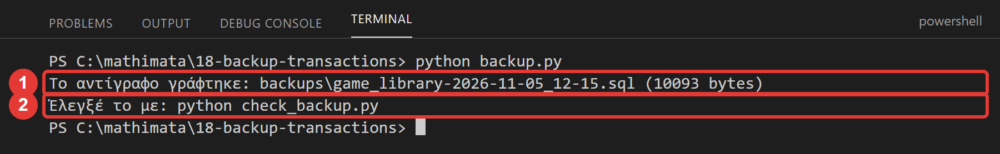
Ο έλεγχος δείχνει τα αρχεία του φακέλου backups (το pma-… από το Στάδιο 1, το game_library.sql από το Στάδιο 2 και το νέο, με την ώρα στο όνομα). Διάλεξε το pma-game_library.sql:
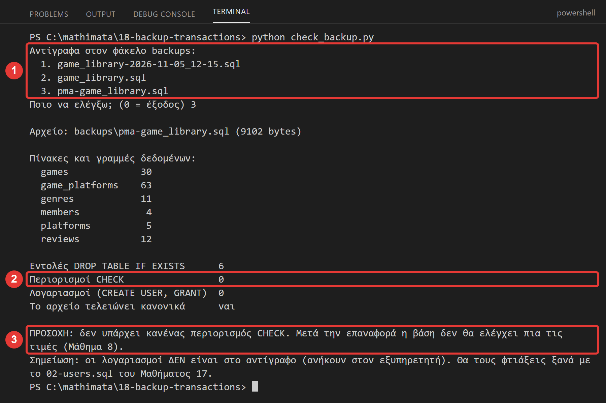
Δοκίμασε και τα άλλα δύο αρχεία: έχουν 5 περιορισμούς. Αν το πρόγραμμα αποτύχει, το μήνυμά του είναι ό,τι είπε το mariadb-dump:
| Τι βλέπεις | Τι σημαίνει |
|---|---|
Δεν βρέθηκε το πρόγραμμα αντιγράφων: … |
η διαδρομή DUMP_PROGRAM είναι λάθος (το XAMPP δεν είναι στο C:\xampp) |
Got error: 1045 … (using password: YES) |
λάθος κωδικός του game_reader στο config_local.py |
Got error: 1045 … (using password: NO) |
δεν στάλθηκε κωδικός: το config_local.py λείπει ή έχει λάθος όνομα στη μεταβλητή |
Συνέχισε στο Φύλλο εργασίας.
Κύκλος 2 — Συναλλαγές¶
Στον δεύτερο κύκλο δίνεις στη βάση μια δουλειά με δύο βήματα και μαθαίνεις πώς να τη γράφεις ώστε να μένει πάντα ολόκληρη.
2.1 Το πρόβλημα: δύο βήματα, μία δουλειά¶
Η βιβλιοθήκη μας δανείζει παιχνίδια στα μέλη. Κάθε παιχνίδι έχει 2 αντίτυπα. Ο δανεισμός θέλει δύο εντολές:
INSERT INTO loans …: γράφεται ο δανεισμός.UPDATE games SET copies_available = copies_available - 1 …: χάνεται ένα διαθέσιμο αντίτυπο.
Τι γίνεται αν το πρόγραμμα σταματήσει (σφάλμα, διακοπή ρεύματος, κλείσιμο του υπολογιστή) ανάμεσα στις δύο εντολές;
| Έγινε | Δεν έγινε | Αποτέλεσμα |
|---|---|---|
| και τα δύο | τίποτα | σωστό |
το INSERT |
το UPDATE |
υπάρχει δανεισμός, αλλά το αντίτυπο φαίνεται ακόμη διαθέσιμο: ο επόμενος θα το πάρει κι αυτός |
το UPDATE |
το INSERT |
χάθηκε ένα αντίτυπο χωρίς δανεισμό |
Το 02-loans.sql φτιάχνει τη νέα στήλη games.copies_available (με CHECK (copies_available >= 0): δεν γίνεται αρνητικό) και τον πίνακα loans (ένας δανεισμός = ένα μέλος, ένα παιχνίδι, ημερομηνία δανεισμού και ημερομηνία επιστροφής, που είναι NULL όσο το παιχνίδι είναι δανεισμένο). Βάζει 4 δανεισμούς, οι τρεις ενεργοί: το Star Dodger (id 1) έχει 1 διαθέσιμο αντίτυπο και το Pixel Racer (id 2) κανένα.
Έτσι έχουμε έναν κανόνα που πρέπει να ισχύει πάντα: για κάθε παιχνίδι, διαθέσιμα αντίτυπα + ενεργοί δανεισμοί = 2. Το πρόγραμμα loans.py έχει ερώτημα που τον ελέγχει (check_consistency), όπως το <> του Μαθήματος 13.
Τρέξε το 02-loans.sql (Import, με επιλεγμένη τη βάση game_library).
2.2 Η συναλλαγή¶
Συναλλαγή (transaction) είναι μια ομάδα εντολών που γίνονται όλες ή καμία. Τρεις εντολές τη διαχειρίζονται:
| Εντολή | Τι κάνει |
|---|---|
START TRANSACTION |
ξεκινά μια συναλλαγή: οι αλλαγές που ακολουθούν είναι προσωρινές |
COMMIT |
οριστικοποιεί όλες τις αλλαγές της συναλλαγής μαζί |
ROLLBACK |
ακυρώνει όλες τις αλλαγές της συναλλαγής: η βάση γυρίζει όπως ήταν στην αρχή της |
Αυτόματο COMMIT (autocommit). Το phpMyAdmin (και ο πελάτης mariadb) δουλεύουν με αυτόματο COMMIT: κάθε εντολή είναι δική της συναλλαγή και οριστικοποιείται αμέσως. Το START TRANSACTION το σταματά μέχρι το επόμενο COMMIT ή ROLLBACK.
Στην Python το αντίθετο: το mysql.connector δουλεύει με κλειστό autocommit. Η συναλλαγή αρχίζει μόνη της με την πρώτη εντολή και τελειώνει με connection.commit() ή connection.rollback(). Αυτό που έκανες από το Μάθημα 5 («χωρίς commit δεν αποθηκεύεται τίποτα», και το rollback του Μαθήματος 6) ήταν συναλλαγές, χωρίς να τις λέγαμε έτσι.
Οι συναλλαγές εγγυώνται τέσσερα πράγματα, που τα λένε ACID (θα τα δεις στην πράξη σήμερα):
| Ιδιότητα | Τι σημαίνει |
|---|---|
| Atomicity (ατομικότητα) | όλες οι εντολές γίνονται ή καμία |
| Consistency (συνέπεια) | οι κανόνες της βάσης (CHECK, ξένα κλειδιά) ισχύουν πάντα στο τέλος |
| Isolation (απομόνωση) | ό,τι δεν έχει οριστικοποιηθεί, οι άλλοι δεν το βλέπουν |
| Durability (αντοχή) | ό,τι οριστικοποιήθηκε με COMMIT δεν χάνεται, ακόμη και με διακοπή ρεύματος |
Δύο προσοχές:
- Ένα σφάλμα στη μέση δεν ακυρώνει αυτόματα τις προηγούμενες εντολές. Η βάση απορρίπτει μόνο την εντολή που απέτυχε. Το
ROLLBACKείναι δική σου δουλειά. - Οι εντολές που αλλάζουν δομή (
CREATE,ALTER,DROP) οριστικοποιούν αμέσως (αυτόματοCOMMIT) και δεν γυρίζουν πίσω. (Θα το δοκιμάσεις στην Πρόκληση 3.) Το ίδιο ισχύει και για πίνακες τύπουMyISAM, που δεν υποστηρίζουν καθόλου συναλλαγές: οι πίνακες του XAMPP είναιInnoDB.
Στάδιο 4 — Συναλλαγές στο phpMyAdmin¶
Άνοιξε το 03-transactions.sql. Συμπλήρωσε τα τρία κενά. Μετά, στην καρτέλα SQL της βάσης game_library, τρέξε τα βήματα ένα-ένα: αντίγραψε ολόκληρο το μπλοκ ενός βήματος (από τη γραμμή -- Βήμα ως το κενό πριν από το επόμενο) και πάτα Go μία φορά. Το phpMyAdmin τρέχει όλες τις εντολές του μπλοκ στην ίδια σύνδεση, και δείχνει το αποτέλεσμα της καθεμιάς. Πριν από κάθε βήμα πρόβλεψε τι θα δείξει το κάθε SELECT.
-- Στάδιο 4 — Συναλλαγές στο phpMyAdmin: START TRANSACTION, COMMIT, ROLLBACK.
--
-- Τρέχεις αυτό το αρχείο στην καρτέλα SQL της βάσης game_library (ΟΧΙ με Import), ένα ΒΗΜΑ τη φορά. Κάθε βήμα είναι ένα ΜΠΛΟΚ: αντίγραψε
-- ΟΛΟ το μπλοκ (από τη γραμμή «-- Βήμα» ως το κενό πριν από το επόμενο) στο πεδίο SQL και πάτα Go ΜΙΑ φορά. Το phpMyAdmin τρέχει όλες τις
-- εντολές του μπλοκ στην ΙΔΙΑ σύνδεση και δείχνει το αποτέλεσμα της καθεμιάς.
--
-- Πριν από κάθε βήμα ΠΡΟΒΛΕΨΕ τι θα δείξει το κάθε SELECT.
-- Προϋπόθεση: έχεις τρέξει το 02-loans.sql (το Star Dodger, id 1, έχει 1 διαθέσιμο αντίτυπο και υπάρχουν 4 δανεισμοί).
-- Βήμα 1 (έτοιμο): η αρχική κατάσταση. Πόσα αντίτυπα έχει το Star Dodger;
SELECT id, title, copies_available FROM games WHERE id = 1;
-- Βήμα 2: ΔΟΚΙΜΗ με ROLLBACK. Η συναλλαγή αρχίζει, αλλάζει ένα αντίτυπο, το δείχνει, και μετά ΑΚΥΡΩΝΕΤΑΙ.
____ TRANSACTION;
UPDATE games SET copies_available = copies_available - 1 WHERE id = 1;
-- ΜΕΣΑ στη συναλλαγή:
SELECT id, title, copies_available FROM games WHERE id = 1;
____;
-- ΜΕΤΑ το τέλος της:
SELECT id, title, copies_available FROM games WHERE id = 1;
-- Βήμα 3: το ίδιο, αλλά τώρα η συναλλαγή ΟΡΙΣΤΙΚΟΠΟΙΕΙΤΑΙ.
START TRANSACTION;
UPDATE games SET copies_available = copies_available - 1 WHERE id = 1;
____;
SELECT id, title, copies_available FROM games WHERE id = 1;
-- Βήμα 4 (έτοιμο): ΧΩΡΙΣ START TRANSACTION. Το phpMyAdmin δουλεύει με «αυτόματο COMMIT» (autocommit): κάθε εντολή οριστικοποιείται αμέσως.
-- Πρόβλεψη: τι θα δείξει το SELECT; Θα «γυρίσει πίσω» το ROLLBACK την αλλαγή;
UPDATE games SET copies_available = 1 WHERE id = 1;
ROLLBACK;
SELECT id, title, copies_available FROM games WHERE id = 1;
-- Βήμα 5 (έτοιμο): ένα ΣΦΑΛΜΑ στη μέση. Το Pixel Racer (id 2) δεν έχει διαθέσιμα αντίτυπα, άρα το δεύτερο UPDATE θα αποτύχει (CHECK).
-- Πρόβλεψη: θα μείνει ο νέος δανεισμός στον loans;
START TRANSACTION;
INSERT INTO loans (game_id, member_id) VALUES (2, 4);
UPDATE games SET copies_available = copies_available - 1 WHERE id = 2;
COMMIT;
-- Βήμα 6 (έτοιμο): πόσοι δανεισμοί υπάρχουν τώρα;
SELECT COUNT(*) AS loans_n FROM loans;
Στο Βήμα 2 το πρώτο SELECT (μέσα στη συναλλαγή) δείχνει 0 και το δεύτερο (μετά το ROLLBACK) δείχνει 1:
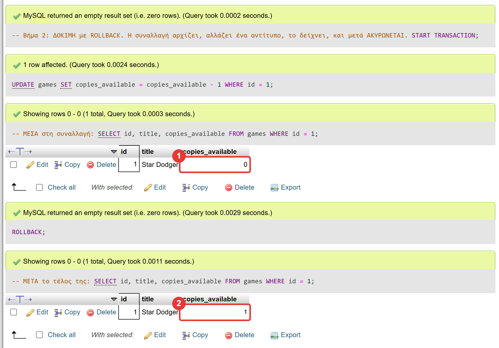
Το Βήμα 3 (με COMMIT) αφήνει το Star Dodger με 0 αντίτυπα, οριστικά. Το Βήμα 4 δείχνει το «αυτόματο COMMIT»: το UPDATE ξαναβάζει 1, και χωρίς START TRANSACTION το ROLLBACK δεν έχει τι να ακυρώσει, άρα η τιμή μένει 1 (και η βάση γυρίζει στην αρχική της κατάσταση). Στο Βήμα 5 το δεύτερο UPDATE αποτυγχάνει:
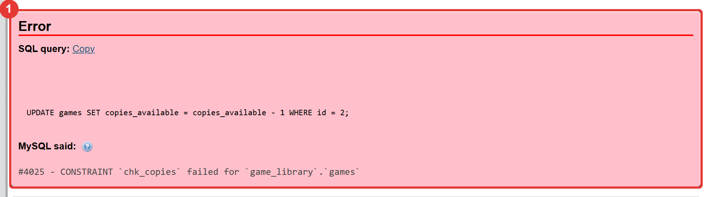
Το phpMyAdmin σταματά στο σφάλμα και κλείνει τη σύνδεση. Μια συναλλαγή που δεν τελείωσε ακυρώνεται όταν κλείσει η σύνδεση, γι' αυτό στο Βήμα 6 οι δανεισμοί είναι ακόμη 4 και όχι 5. Κράτα αυτή τη σκέψη: στην Python η σύνδεση δεν κλείνει μετά από ένα σφάλμα.
2.3 Συναλλαγές από την Python¶
Στο Μάθημα 14 (add_game) έγραψες ένα μοτίβο: δύο ή περισσότερες εντολές, ένα commit στο τέλος, και rollback αν κάτι πάει στραβά. Αυτό είναι ακριβώς μια συναλλαγή. Για τον δανεισμό:
def lend_game(connection, game_id, member_id):
"""Δανείζει ένα παιχνίδι. ΔΥΟ αλλαγές που γίνονται ΜΑΖΙ ή καθόλου: (1) νέα γραμμή στον loans, (2) ένα διαθέσιμο αντίτυπο λιγότερο.
Επιστρέφει το id του δανεισμού. Αν η βάση δώσει σφάλμα (π.χ. 4025: δεν υπάρχει διαθέσιμο αντίτυπο), ακυρώνει ΟΛΑ και ξαναπετά το σφάλμα.
"""
with connection.cursor() as cursor:
try:
cursor.execute("INSERT INTO loans (game_id, member_id) VALUES (%s, %s)", (game_id, member_id))
loan_id = cursor.lastrowid
cursor.execute("UPDATE games SET copies_available = copies_available - 1 WHERE id = %s", (game_id,))
# TODO 1: οριστικοποίησε ΚΑΙ τις δύο αλλαγές μαζί
connection.____()
except mysql.connector.Error:
# TODO 2: ακύρωσε ό,τι έγινε ως τώρα, ώστε να μη μείνει τίποτα μισό
connection.____()
# TODO 3: ξαναπέτα το ίδιο σφάλμα προς τα πάνω (το lending.py ξέρει τι θα πει στον χρήστη)
____
return loan_id
Τρία κομμάτια, και τα τρία χρειάζονται:
commit()μία φορά, μετά και τις δύο εντολές. Έναcommitανάμεσά τους θα οριστικοποιούσε μισή δουλειά.rollback()όταν η βάση δώσει σφάλμα. Ακυρώνει και τοINSERTπου είχε ήδη γίνει.raise. Το σφάλμα ξαναπετιέται προς τα πάνω: τοlending.pyξέρει τι θα πει στον χρήστη. Αν το «καταπιείς», το πρόγραμμα που καλεί τη συνάρτηση θα νομίζει ότι ο δανεισμός έγινε.
Το παιχνίδι αναπαράγει το λάθος που δεν φαίνεται: ένα try/except που πιάνει το σφάλμα και ξεχνά το rollback. Δες τις δύο εκδοχές στο lab_transactions.py:
def lend_forgetful(connection, game_id, member_id):
"""Δανείζει, αλλά αν η βάση δώσει σφάλμα το πιάνει και συνεχίζει, ΧΩΡΙΣ rollback."""
with connection.cursor() as cursor:
try:
cursor.execute("INSERT INTO loans (game_id, member_id) VALUES (%s, %s)", (game_id, member_id))
cursor.execute("UPDATE games SET copies_available = copies_available - 1 WHERE id = %s", (game_id,))
connection.commit()
except mysql.connector.Error as error:
print(f" η βάση απάντησε: #{error.errno} {error.msg}")
print(" (το πρόγραμμα πιάνει το σφάλμα και συνεχίζει)")
def lend_careful(connection, game_id, member_id):
"""Το ίδιο, αλλά μετά το σφάλμα κάνει rollback."""
with connection.cursor() as cursor:
try:
cursor.execute("INSERT INTO loans (game_id, member_id) VALUES (%s, %s)", (game_id, member_id))
cursor.execute("UPDATE games SET copies_available = copies_available - 1 WHERE id = %s", (game_id,))
connection.commit()
except mysql.connector.Error as error:
connection.rollback()
print(f" η βάση απάντησε: #{error.errno} {error.msg}")
print(" (το πρόγραμμα πιάνει το σφάλμα ΚΑΙ κάνει rollback)")
Η μόνη διαφορά είναι μία γραμμή (connection.rollback()). Στην πρώτη, μετά το σφάλμα η σύνδεση κρατά το INSERT που έγινε. Δεν φαίνεται τίποτα, ώσπου κάποιο επόμενο commit (και κάθε μενού μας κάνει connection.commit() στην αρχή του γύρου, Μάθημα 7) το οριστικοποιεί.
Στάδιο 5 — Το λάθος που δεν φαίνεται¶
Τρέξε python lab_transactions.py. Δανείζει το Pixel Racer, που δεν έχει διαθέσιμο αντίτυπο, και στις δύο εκδοχές:
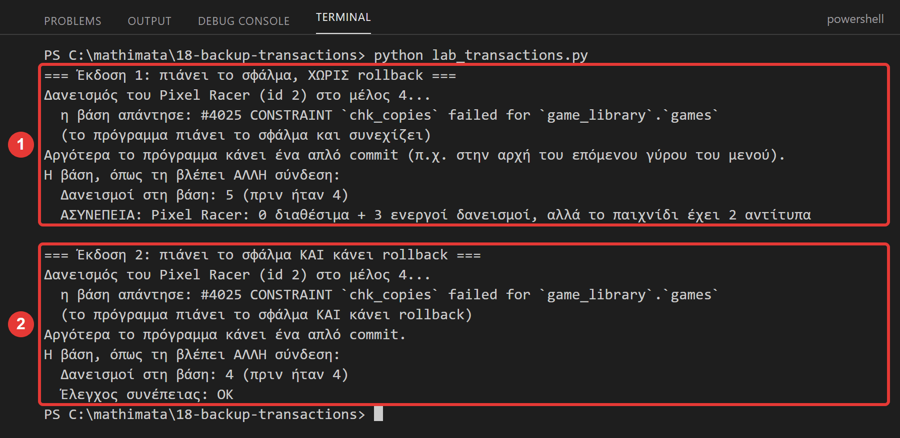
Στην πρώτη έκδοση η βάση έμεινε με έναν δανεισμό που δεν έπρεπε να υπάρχει: 3 άνθρωποι «έχουν» ένα παιχνίδι που έχει 2 αντίτυπα. Ο έλεγχος το πιάνει, αλλά το πρόγραμμα δεν έδωσε κανένα σφάλμα. (Το πρόγραμμα έβλεπε τη βάση από άλλη σύνδεση, γιατί η ίδια η σύνδεση βλέπει πάντα τις δικές της αλλαγές.)
Στάδιο 6 — loans.py¶
Άνοιξε το loans.py και συμπλήρωσε τα πέντε κενά, στις lend_game και return_game. Η return_game κάνει δύο αλλαγές: βάζει returned_on στον δανεισμό και ξαναδίνει ένα αντίτυπο. Χρησιμοποιεί UPDATE … JOIN (Μάθημα 12):
def return_game(connection, loan_id):
"""Επιστροφή παιχνιδιού: βάζει returned_on στον δανεισμό ΚΑΙ ξαναδίνει ένα διαθέσιμο αντίτυπο, ΜΑΖΙ.
Επιστρέφει True αν έγινε η επιστροφή, ή False αν ο δανεισμός δεν υπάρχει ή έχει ήδη επιστραφεί (και τότε δεν αλλάζει τίποτα).
"""
with connection.cursor() as cursor:
try:
cursor.execute("UPDATE loans SET returned_on = CURDATE() WHERE id = %s AND returned_on IS NULL", (loan_id,))
# TODO 4: πόσες γραμμές άλλαξε το UPDATE; Αν καμία, δεν υπάρχει ενεργός δανεισμός με αυτό το id
if cursor.____ == 0:
connection.rollback()
return False
cursor.execute(
"UPDATE games AS g JOIN loans AS l ON l.game_id = g.id "
"SET g.copies_available = g.copies_available + 1 WHERE l.id = %s",
(loan_id,),
)
# TODO 5: οριστικοποίησε και τις δύο αλλαγές μαζί
connection.____()
except mysql.connector.Error:
connection.rollback()
raise
return True
Η return_game επιστρέφει False (και κάνει rollback) αν ο δανεισμός δεν υπάρχει ή έχει ήδη επιστραφεί: η πρώτη εντολή, με το AND returned_on IS NULL, δεν αλλάζει καμία γραμμή (rowcount 0, Μάθημα 6).
Τρέξε τον έτοιμο έλεγχο:
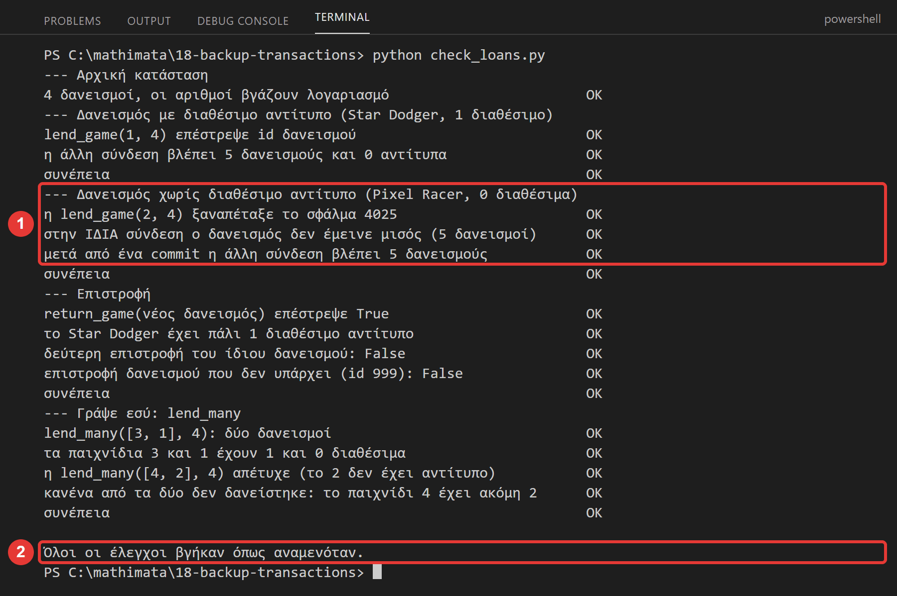
Ο έλεγχος χρησιμοποιεί δύο συνδέσεις: η μία κάνει τις κινήσεις και η άλλη βλέπει μόνο ό,τι έχει οριστικοποιηθεί. Αν λείπει το rollback, βγαίνει ΛΑΘΟΣ έμεινε μισός δανεισμός.
Δοκίμασε και το πρόγραμμα με το μενού (python lending.py): δάνεισε το Pixel Racer (id 2) στο μέλος 4, και μετά το Star Dodger (id 1):
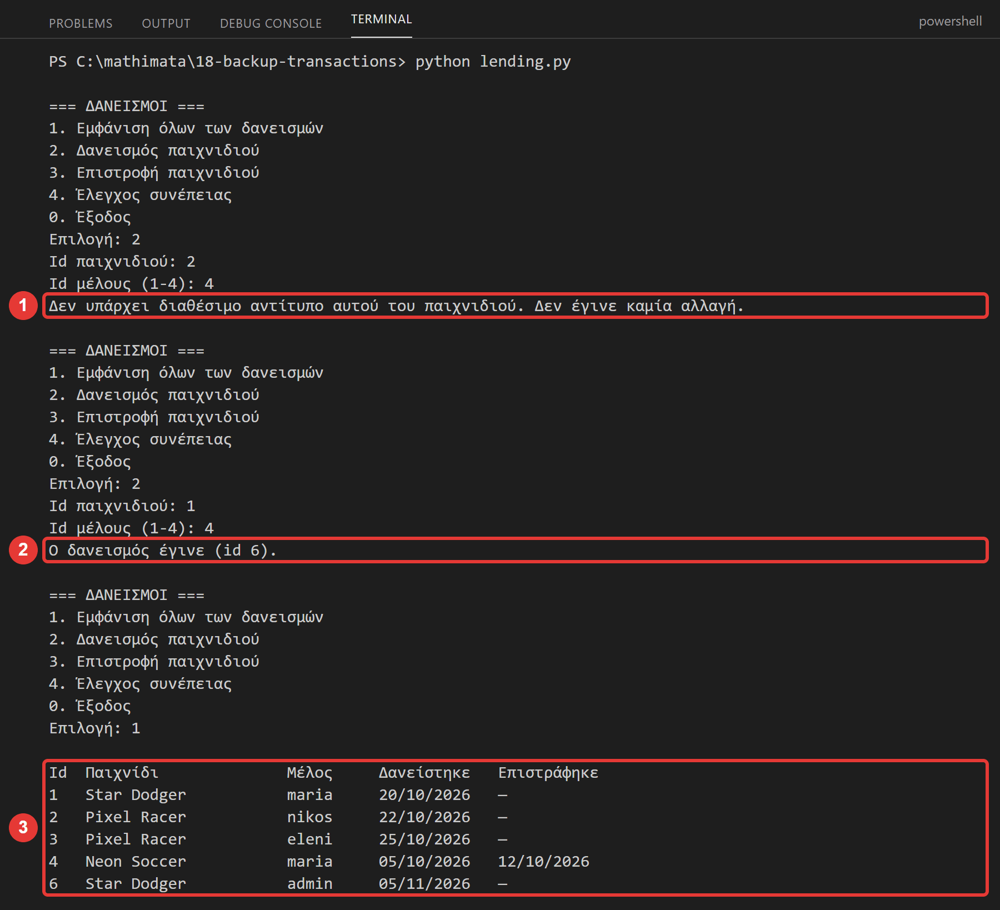
Πρόσεξε ότι το νέο id είναι το 6, και ότι στη λίστα λείπει το 5: η αποτυχημένη προσπάθεια έκανε INSERT (που πήρε το id 5) και μετά rollback. Ένα id που χρησιμοποιήθηκε δεν ξαναδίνεται, ακόμη κι όταν η γραμμή ακυρωθεί (το είδες και στο Μάθημα 6). Δεν είναι λάθος: τα id είναι ταυτότητες, όχι αρίθμηση χωρίς κενά.
Γράψε εσύ — η lend_many¶
Πρόσθεσε στο loans.py τη συνάρτηση lend_many(connection, game_ids, member_id), που δανείζει πολλά παιχνίδια στο ίδιο μέλος: ή όλα ή κανένα. Επιστρέφει τη λίστα με τα id των δανεισμών. Αν ένα παιχνίδι δεν έχει διαθέσιμο αντίτυπο, κανένα από τα προηγούμενα δεν πρέπει να μείνει δανεισμένο, και το σφάλμα ξαναπετιέται. Τρέξε ξανά το check_loans.py: όταν υπάρχει η lend_many, δοκιμάζει και αυτήν.
2.4 Δύο συνδέσεις: απομόνωση και κλειδώματα¶
Μέχρι τώρα δούλευε ένας χρήστης. Στην πράξη, πολλοί χρήστες (και προγράμματα) δουλεύουν ταυτόχρονα. Η απομόνωση (το «I» του ACID) λέει: ό,τι δεν έχει οριστικοποιηθεί, οι άλλοι δεν το βλέπουν. Το ξέρεις ήδη από το Μάθημα 7: μια σύνδεση έχει μια «φωτογραφία» της βάσης ώσπου να κάνει commit ή rollback.
Υπάρχει και δεύτερο αποτέλεσμα: όσο μια συναλλαγή έχει αλλάξει μια γραμμή χωρίς να τελειώσει, η γραμμή είναι κλειδωμένη. Μια άλλη συναλλαγή που θέλει να την αλλάξει περιμένει, και μετά από λίγο παίρνει #1205 - Lock wait timeout exceeded (στο XAMPP μετά από 50″). Γι' αυτό οι συναλλαγές πρέπει να είναι σύντομες: γράψε τις εντολές, commit, τέλος. Μη «ξεχνάς» ανοιχτή μια συναλλαγή.
Θα τα δεις στην Πρόκληση 1 με το lab_isolation.py.
2.5 Και τι άλλο¶
- Σημεία αποθήκευσης (
SAVEPOINT): επιτρέπουν να ακυρώσεις μέρος μιας συναλλαγής. Εκτός ύλης. - Αδιέξοδο (deadlock): δύο συναλλαγές που περιμένουν η μία την άλλη. Η βάση ακυρώνει τη μία με σφάλμα· το πρόγραμμα πρέπει να ξαναδοκιμάσει. Εκτός ύλης.
- Να κλειδώσεις μια γραμμή από πριν: το
SELECT … FOR UPDATE. Εκτός ύλης. - Αυτόματα αντίγραφα: το
backup.pyμπορεί να τρέχει κάθε μέρα με τον Χρονοπρογραμματιστή εργασιών (Task Scheduler) των Windows. Εκτός ύλης. - Αντίγραφα μεγάλων συστημάτων: συνεχής αντιγραφή των αλλαγών (binary log), ώστε να επαναφέρεις ακόμη και «στις 14:03». Εκτός ύλης.
Συνέχισε στο Φύλλο εργασίας, Κύκλος 2.
Έλεγχος πριν ολοκληρώσεις¶
- □ Πήρες αντίγραφο με το phpMyAdmin και με το
mariadb-dump, και επανέφερες από καθένα. - □ Βρήκες ότι το αντίγραφο του phpMyAdmin δεν έφερε τους περιορισμούς
CHECK, ενώ τουmariadb-dumpτους έφερε. - □ Το
backup.pyέφτιαξε αντίγραφο με ημερομηνία και ώρα στο όνομα, και τοcheck_backup.pyτο διάβασε. - □ Έτρεξες τα βήματα του
03-transactions.sqlκαι είδες τι κάνουν τοCOMMITκαι τοROLLBACK. - □ Είδες στο
lab_transactions.pyτι μένει στη βάση όταν ξεχνάς τοrollback. - □ Το
check_loans.pyβγήκε με «Όλοι οι έλεγχοι βγήκαν όπως αναμενόταν». - □ Όταν τελείωσες, σταμάτησες τον Apache και τη MySQL.
Για να θυμάσαι¶
- Αντίγραφο ασφαλείας = αρχείο
.sqlμεCREATE TABLEκαιINSERT. Δεν έχει τους λογαριασμούς. Έχει τα δεδομένα, και τα hash των κωδικών: φύλαξέ το σαν μυστικό (όχι στο git). mariadb-dump --single-transaction --databases βάση --result-file=αρχείοφτιάχνει αντίγραφο·mariadb -e "source αρχείο"(με κάθετες/) επαναφέρει. Όχι>και όχιGet-Content |.- Επαναφορά = γυρνάς στην ώρα του αντιγράφου. Ό,τι έγινε μετά χάνεται. Την κάνει ο διαχειριστής, όχι το πρόγραμμα της εφαρμογής.
- Ένα αντίγραφο που δεν το έχεις δοκιμάσει δεν είναι αντίγραφο. Το phpMyAdmin (στην έκδοση που δοκιμάσαμε) χάνει τους
CHECK. - Από την Python:
subprocess.run(λίστα, capture_output=True, text=True), έλεγχος τουreturncode, κωδικός μεMYSQL_PWD, όνομα μεstrftime. - Συναλλαγή = ομάδα εντολών που γίνονται όλες ή καμία:
START TRANSACTION,COMMIT,ROLLBACK. Το phpMyAdmin έχει autocommit, η Python (mysql.connector) όχι. - Ένα σφάλμα στη μέση δεν ακυρώνει τις προηγούμενες εντολές:
except … rollback … raise. Έναtry/exceptχωρίςrollbackαφήνει μισή δουλειά, που τη βγάζει στη φόρα ένα επόμενοcommit. CREATE,ALTER,DROPοριστικοποιούν αμέσως και δεν ακυρώνονται.
Λεξιλόγιο¶
αντίγραφο ασφαλείας (backup), επαναφορά (restore), κανόνας 3-2-1, mariadb-dump, subprocess, κωδικός εξόδου (returncode), συναλλαγή (transaction), COMMIT, ROLLBACK, αυτόματο COMMIT (autocommit), ACID, απομόνωση (isolation), κλείδωμα (lock).
Δική σου εκδοχή¶
Αν τελειώσεις νωρίτερα, δούλεψε με μία αλλαγή τη φορά και τρέχε το πρόγραμμα μετά από κάθε αλλαγή:
- Πρόκληση 1: τρέξε
python lab_isolation.py. Πριν το τρέξεις, πρόβλεψε τι θα διαβάζει η σύνδεση Β σε κάθε βήμα. Εξήγησε τρία πράγματα: γιατί η Β δεν είδε την αλλαγή της Α πριν από τοCOMMIT, γιατί δεν την είδε ούτε αμέσως μετά, και γιατί η Β πήρε#1205. - Πρόκληση 2: πρόσθεσε στο
backup.pyτη συνάρτησηkeep_last(folder, count), που σβήνει τα παλιότερα αντίγραφα και κρατά μόνο ταcountτελευταία (βοήθεια:os.listdir,sorted,os.remove, και τα ονόματα ταξινομούνται χρονολογικά). Δοκίμασέ τη μεcount = 2μόνο στον φάκελοbackups. - Πρόκληση 3: στην καρτέλα SQL φτιάξε έναν δοκιμαστικό πίνακα:
CREATE TABLE zz_test (x INT); INSERT INTO zz_test VALUES (1);. Τρέξε σε ένα μπλοκSTART TRANSACTION; DELETE FROM zz_test; CREATE TABLE zz_other (y INT); ROLLBACK; SELECT COUNT(*) FROM zz_test;. Πρόβλεψε πρώτα τι θα δείξει τοSELECT. Μετά βάλε πάλι μια γραμμή (INSERT INTO zz_test VALUES (1);) και τρέξε το ίδιο μπλοκ χωρίς τοCREATE TABLE zz_other. Τι διαφέρει και γιατί; (Σκέψου τι κάνει τοCREATE TABLEστη συναλλαγή.) Σβήσε τους πίνακες όταν τελειώσεις:DROP TABLE zz_test, zz_other;.